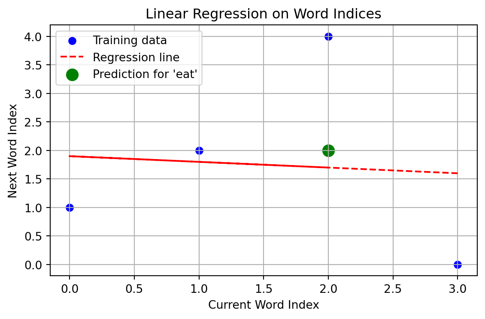

Image source: Build a Large Language Model (From Scratch) by Sebastian Raschka
According to John D. Kelleher “the field of artificial intelligence was born at a workshop at Dartmouth College in the summer of 1956.”
Machine Learning
Supervised Learning: “Here’s the question and the right answer.”
Unsupervised Learning: “Here is some data, can you find patterns and/or organize it in a meaningful way?”
Reinforcement Learning: “You’re an agent playing a, figure out the best strategy through trial and error, using only points (rewards) as feedback.”
“During training, a machine learning algorithm processes a dataset and chooses the function that best matches the patterns in the data.”
supervised, unsupervised, and reinforcement.
Supervised Learning
Supervised learning is the most widely used type of machine learning and significantly overlaps with the methodologies of other quantitative fields, such as econometrics.
Supervised learning gets its name from the fact that the input data set has examples of both inputs and outputs.
The outputs are called labels, hence you will sometime hear the term “labeled dataset.”
logistic (sigmoid) function:
Softmax:
Regression
Classification
Loss Functions
A loss function is a mathematical function that measures the difference between a model’s predicted output and the true target value from a training dataset. It produces a scalar value representing the error for a single data point or the average error over a batch.
Cross entropy loss: “cross entropy” and “negative average log probability” related and often used interchangeably in practice.”
Perplexity: “Perplexity is a measure often used alongside cross entropy loss to evaluate the performance of models in tasks like language modeling.”
Gradient Descent
Linear Regression
import pandas as pdfrom sklearn.linear_model import LinearRegressionimport numpy as npimport matplotlib.pyplot as plt# Step 1: Input texttext ="I love to eat pizza"tokens = text.split()# Step 2: Create vocabulary and mappingsvocab = {word: i for i, word inenumerate(set(tokens))}reverse_vocab = {i: word for word, i in vocab.items()}# Step 3: Build a DataFramedata = pd.DataFrame({"Current Word": tokens[:-1],"Next Word": tokens[1:]})data["Current Index"] = data["Current Word"].map(vocab)data["Next Index"] = data["Next Word"].map(vocab)# Step 4: Train the modelX = data["Current Index"].values.reshape(-1, 1)y = data["Next Index"].valuesmodel = LinearRegression()model.fit(X, y)# Step 5: Make predictioninput_word ="eat"input_index = vocab[input_word]predicted_index =round(model.predict([[input_index]])[0])predicted_word = reverse_vocab.get(predicted_index, "UNKNOWN")# Step 6: Plotplt.figure(figsize=(6, 4))plt.scatter(X, y, color='blue', label="Training data")plt.plot(X, model.predict(X), color='red', linestyle='--', label="Regression line")plt.scatter([input_index], [predicted_index], color='green', s=100, label=f"Prediction for '{input_word}'")plt.title("Linear Regression on Word Indices")plt.xlabel("Current Word Index")plt.ylabel("Next Word Index")plt.legend()plt.grid(True)plt.tight_layout()plt.show()# Display table and predictionprint("Token Table:\n")print(data)print("\nPrediction:")print(f"Input word: '{input_word}' (index {input_index})")print(f"Predicted next word index: {predicted_index}")print(f"Predicted next word: '{predicted_word}'")

Token Table:
Current Word Next Word Current Index Next Index
0 I love 3 0
1 love to 0 1
2 to eat 1 2
3 eat pizza 2 4
Prediction:
Input word: 'eat' (index 2)
Predicted next word index: 2
Predicted next word: 'eat'
Supervised Learning Use Cases
Supervised Learning (Regression) Use Cases
Use Case
Sample Inputs
Model Output Description
What ML Question is Being Answered?
What Business Question is Being Answered?
Example Algorithm(s)
Price Prediction
Property size, location, features
Numeric price
What is the expected price of this item?
How should I price products to stay competitive and profitable?
Linear Regression, CatBoost
Demand Forecasting
Historical sales, promotions, holidays
Predicted sales volume
What will sales be next week/month?
How can I manage inventory or staffing to meet demand?
Linear Regression, LSTM
Medical Risk Score
Patient vitals, history
Risk score (e.g., probability of event)
How likely is a medical event to occur?
How should I prioritize preventive care for patients?
Random Forest, Ridge Reg.
Revenue Forecasting
Past financials, seasonality
Revenue over next time period
How much revenue will we make?
How can I allocate budgets or set growth targets?
Time Series Models, XGBoost
Energy Usage Estimation
Time of day, weather, appliance use
Predicted energy consumption
How much energy will be used in this period?
How should I manage power supply or optimize grid efficiency?
Linear Regression, SVR
Supervised Learning (Classification) Use Cases
Use Case
Sample Inputs
Model Output Description
What ML Question is Being Answered?
What Business Question is Being Answered?
Example Algorithm(s)
Email Spam Detection
Email content, sender info, subject line
Binary label: spam or not spam
Is this email spam?
How can I prevent unwanted emails from reaching users’ inboxes?
Logistic Regression, SVM
Credit Risk Scoring
Income, credit history, employment data
Risk category (e.g., low/medium/high)
Will this applicant default?
Should I approve this loan, and at what interest rate?
Decision Tree, XGBoost
Image Classification
Pixel values from an image
Object class label (e.g., “cat”, “dog”)
What object is in this image?
How can I organize photos or automate product tagging?
CNNs, ResNet
Sentiment Analysis
Review text, social media posts
Sentiment label (positive/negative)
What sentiment is being expressed?
What is the public opinion about my product or brand?
Naive Bayes, BERT
Disease Diagnosis
Symptoms, test results, demographics
Disease class (e.g., flu, COVID, none)
What condition does this patient likely have?
How can I assist doctors in making accurate and timely diagnoses?
Random Forest, Neural Nets
Unsupervised Learning
Unsupervised Learning Use Cases
Use Case
Sample Inputs
Model Output Description
What ML Question is Being Answered?
What Business Question is Being Answered?
Example Algorithm(s)
Customer Segmentation
Age, income, purchase history
Cluster/group labels for each customer
What types of customers exist in my data?
How can I tailor marketing strategies to different customer types?
K-means, DBSCAN
Topic Modeling
Articles or documents
Topics with keywords per document
What topics are being discussed?
What content themes resonate most with my audience or market?
LDA, NMF
Anomaly Detection
Transaction logs, sensor data
Anomaly score or binary flag
Which data points are unusual?
Are there fraudulent transactions or system failures I need to act on?
Isolation Forest, Autoencoder
Dimensionality Reduction
High-dimensional features (e.g., pixels)
2D or 3D projections for analysis or visualization
How can I reduce feature space while preserving info?
How can I visualize or simplify complex data for human analysis or modeling?
PCA, t-SNE, UMAP
Market Basket Analysis
Sets of purchased items
Association rules (A & B → C)
What items co-occur frequently in purchases?
Which product bundles or cross-sell offers should I promote?
Apriori, FP-Growth
Word Embedding
Text corpus
Word vectors capturing semantic similarity
What are the contextual relationships between words?
How can I build a smarter search engine or chatbot that understands language context?
Word2Vec, GloVe
Image Compression
Raw pixel arrays
Compressed version of the image
How can I represent this image with fewer features?
How can I reduce storage or transmission costs for image data?
Autoencoders
Reinforcement Learning
Reinforcement Learning Use Cases
Use Case
Sample Inputs
Model Output Description
What ML Question is Being Answered?
What Business Question is Being Answered?
Example Algorithm(s)
Game Playing
Game state (e.g., board, score)
Action to take
What should I do to win the game?
How can I build an AI that outperforms humans or creates adaptive gameplay?
Q-learning, DQN
Robotics & Control
Sensor data (angles, velocities, etc.)
Movement or control signals
How should the agent move next to reach a goal?
How can I automate physical tasks like picking, sorting, or navigating?
PPO, SAC, DDPG
Autonomous Vehicles
Sensor input (camera, LIDAR, speed, GPS)
Driving action
What’s the optimal next driving move?
How can I develop a safe and efficient self-driving vehicle system?
Deep RL + sensor fusion
Recommendation Systems
User history, preferences, session behavior
Recommended item
What should I recommend next?
How can I increase user retention, engagement, or sales?
Contextual Bandits, RL
Portfolio Management
Financial indicators, stock prices
Asset allocation decision
How should I invest to maximize return?
How can I build an automated trading or portfolio optimization system?
Actor-Critic methods
Personalized Education
Student progress and quiz results
Next learning step
What lesson or content should come next?
How can I boost student outcomes by personalizing learning pathways?
Multi-armed bandits
Healthcare Treatment
Patient history and vitals
Treatment or intervention strategy
What care plan maximizes long-term patient health?
How can I optimize healthcare outcomes while reducing costs and readmissions?